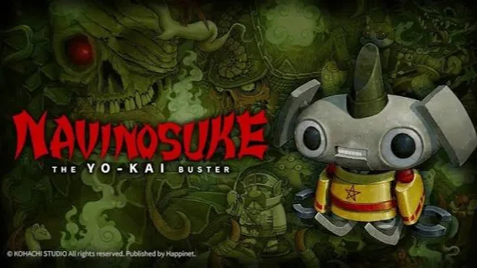

Luiso · 10 de septiembre de 2026 · 2 min de lectura
Hay juegos que desaparecen durante años y otros que directamente parecen haber quedado atrapados en otra época. Ese es el caso de Yokai Buster Nabinosuke, un RPG japonés que comenzó a desarrollarse hace aproximadamente 20 años y que finalmente volverá a la vida.
Happinet confirmó que el juego será publicado en Nintendo Switch y Steam durante 2027, junto al estudio independiente KOHACHI STUDIO.
Yokai Buster Nabinosuke fue desarrollado originalmente a comienzos de los años 2000 por un grupo de creadores que trabajaban en la industria arcade japonesa.
El proyecto quedó sin publicar y permaneció guardado durante cerca de un cuarto de siglo.
Ahora, varios de aquellos desarrolladores decidieron recuperar la idea y convertirla en un lanzamiento oficial.
Entre sus integrantes hay veteranos que participaron en juegos como Metal Slug y R-Type, algo que se refleja especialmente en la estética pixel art del proyecto.
La aventura estará ambientada en una versión ficticia del Japón antiguo y tendrá como protagonista a Nabinosuke, un aprendiz de onmyoji convertido en una especie de muñeco mecánico.
Durante el viaje, el protagonista deberá resolver diferentes incidentes relacionados con los yokai que aparecen por las distintas regiones.
Uno de los elementos centrales será la posibilidad de encontrar y reclutar más de 200 criaturas, que podrán incorporarse al grupo del jugador.
El sistema de combate será de turnos y utilizará atributos y un sistema de shikigami para añadir un componente estratégico.
Los jugadores podrán formar sus propios equipos utilizando las distintas criaturas disponibles, lo que permitirá adaptar la composición del grupo a diferentes situaciones.
Todo esto estará acompañado por una estética de pixel art de inspiración retro, aunque con animaciones modernas para dar vida a los personajes y enemigos.
Yokai Buster Nabinosuke llegará durante 2027 a Nintendo Switch y Steam, aunque por ahora no tiene una fecha concreta ni precio confirmado.
El juego también tendrá presencia jugable en Tokyo Game Show 2026, donde los asistentes podrán probar esta curiosa resurrección de un proyecto que llevaba cerca de veinte años esperando su oportunidad.